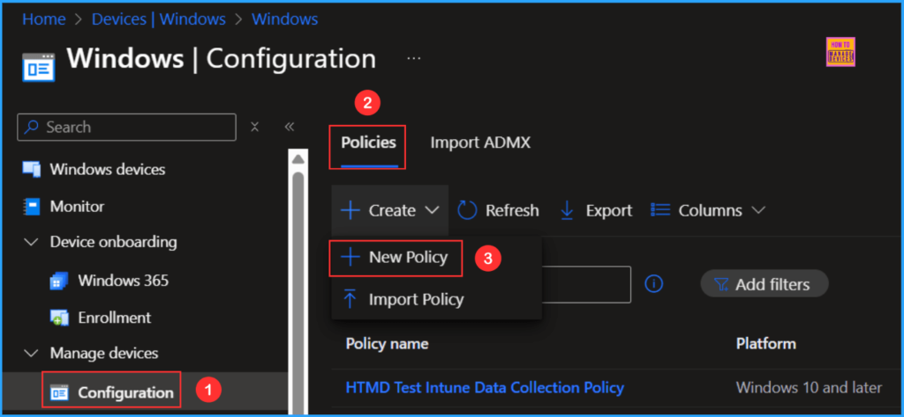
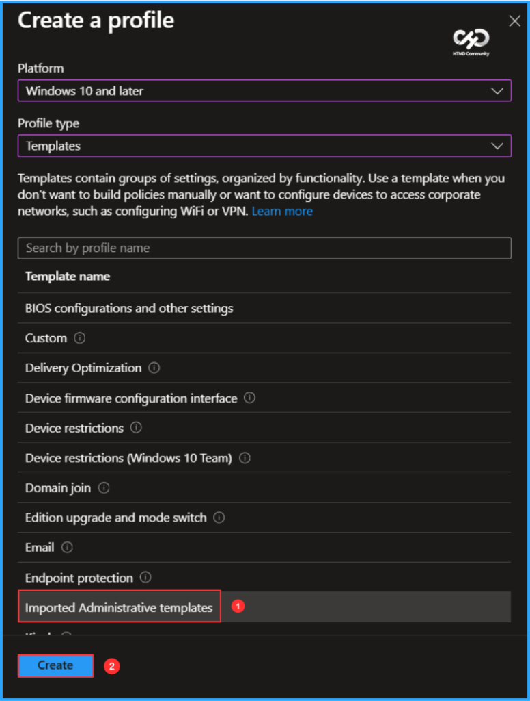
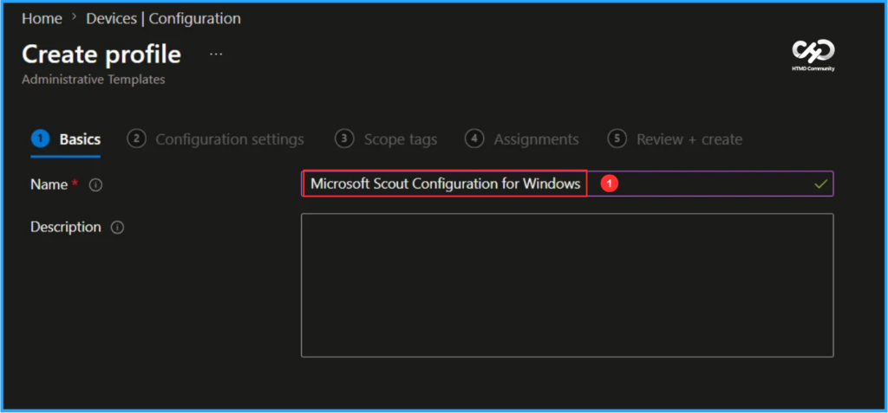
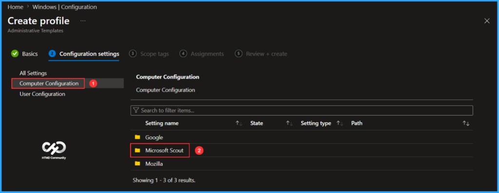
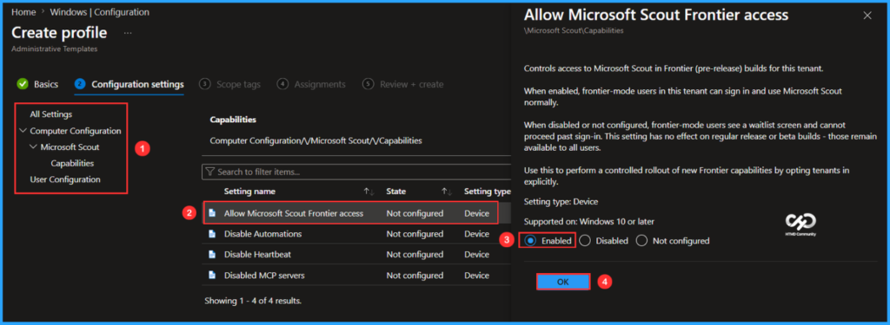
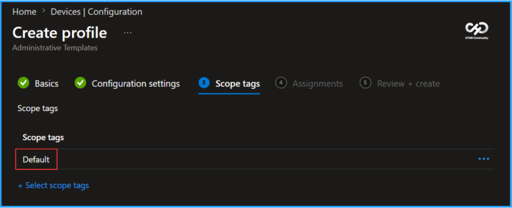
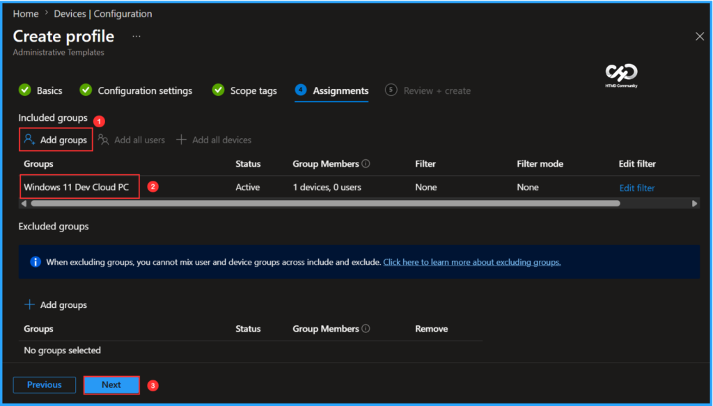
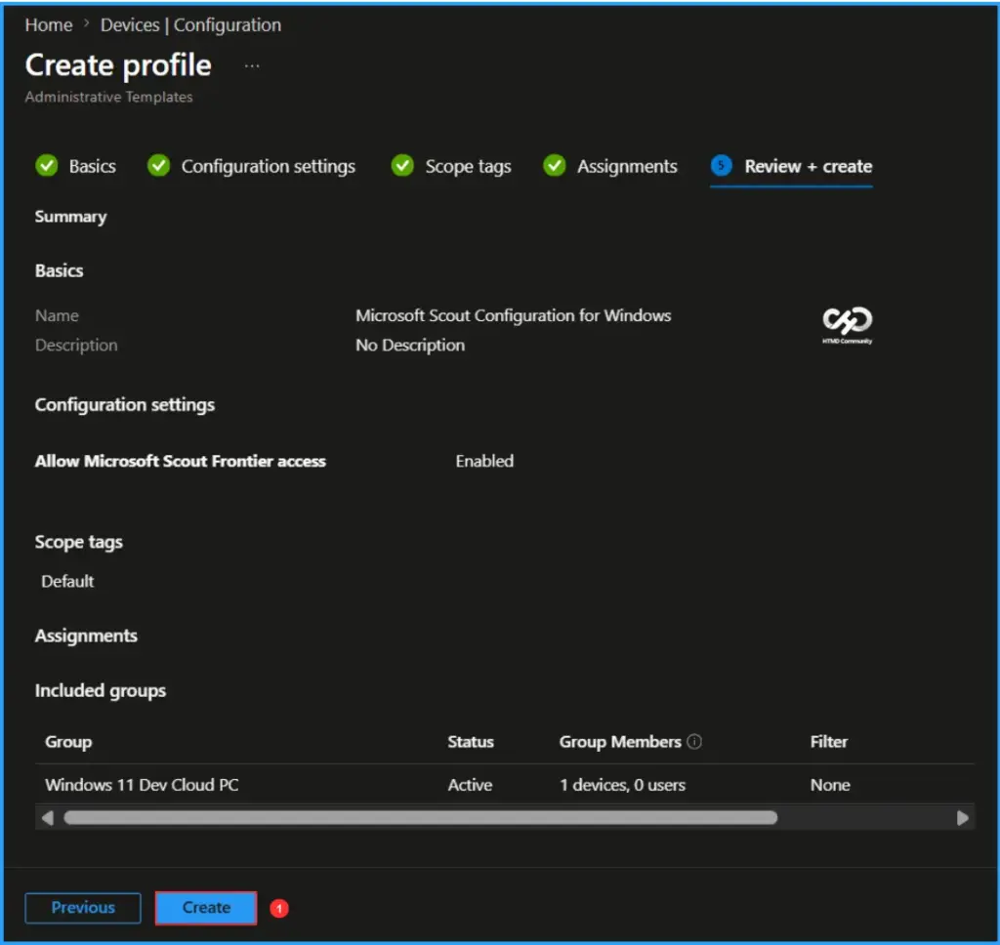
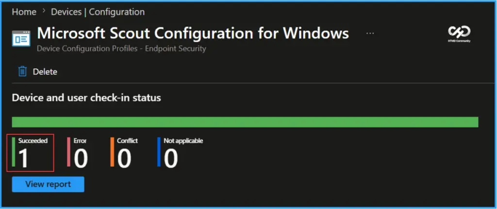
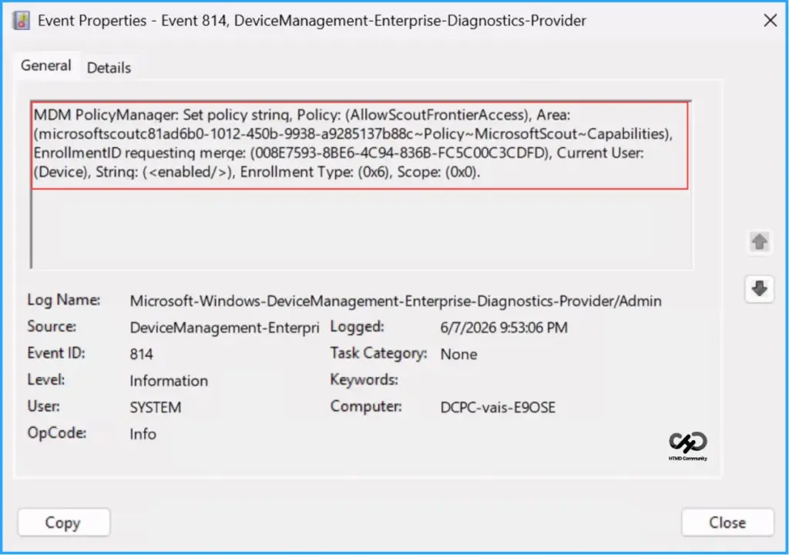

Key Takeaways
- Microsoft Scout can be configured through Intune using configuration policies to manage and enable Scout capabilities for users.
- Access requires enrollment in the Frontier Preview Program and acceptance of the preview participation terms before Microsoft Scout features become available.
- Frontier provides early access to Microsoft’s latest AI innovations, allowing organizations to evaluate new capabilities and provide feedback before general availability.
- Microsoft Scout is currently a preview feature, meaning functionality may be limited, subject to change, and not guaranteed for future general release.
In this article, let’s check how to set up Microsoft Scout using Intune Configuration. The first step is to import the Microsoft Scout Administrative Template (ADMX) files into Intune, making them available when creating Windows configuration policies. Microsoft Scout is an AI-powered desktop assistant for Windows and macOS that can perform tasks on your behalf, including reading and writing files, running shell commands, controlling web browsers, and accessing Microsoft 365 data.
Table of Content
Create a Configuration in Intune to Set up Microsoft Scout
Describe what you need in a natural language conversation, and Scout can execute the required actions while keeping you in control by requesting approval before performing sensitive operations. By integrating Scout with Intune, organizations can securely manage and configure this next-generation AI experience for their users.
To set an Allow Microsoft Scout Frontier access using Microsoft Intune, follow these steps. First, sign in to the Microsoft Intune Admin Center with your administrator credentials.
- Navigate to Devices > Windows > Manage devices > Configuration
- Click on +Create > +New Policy

Next, we will create a new configuration profile from scratch. First, need to provide the options mentioned below. The Imported Administrative Templates library contains configurations available in Intune.
Note – We generally do not recommend importing ADMX templates when the same settings are available in the Intune Settings Catalog. Once Microsoft Scout settings are available in the Settings Catalog, using Settings Catalog policies will be the preferred and recommended configuration method.
- Platform: Windows 10 and later
- Profile type: Templates
- Template name: Imported Administrative templates

In the Basics details pane, name the configuration policy as “Set up Microsoft Scout using Intune for Windows.” It is also helpful to provide a brief description of the policy’s purpose. After that, click Next.

On the Configuration settings page, select Computer Configuration from All Settings, and then choose the Microsoft Scout folder.

In the Capabilities folder, locate all related settings. Select “Allow Microsoft Scout Frontier access,” enable it in the pop-up window, and click OK.
Note: Controls access to Microsoft Scout in Frontier (pre-release) builds for this tenant. When enabled, frontier-mode users in this tenant can sign in and use Microsoft Scout normally. When disabled or not configured, frontier-mode users see a waitlist screen and cannot proceed past sign-in. This setting does not affect regular release or beta builds – those remain available to all users. Use this to perform a controlled rollout of new Frontier capabilities by opting tenants in explicitly.

On the next page, leave the Scope tags as Default. If your tenant has custom scope tags, you can select them based on your policy needs, then click on Next.

I’ll assign the configuration policy to the Windows 11 Dev Cloud PC device group. To do this, click on Add groups and select the desired device group under the Included groups option. In this example, I am not using any filters.

On the Review + create page, carefully review all the settings you’ve defined for the Microsoft Scout using Intune Configuration for Windows. Once you’ve confirmed everything is correct, select Create to deploy the policy.

Monitor the Microsoft Scout using Intune Configuration Policy Deployment
The configuration policy has been deployed to the Windows 11 Dev Cloud PC Microsoft Entra ID Device group. Once the Cloud PC is synced, the policy will take effect immediately. To monitor the policy deployment status from the Intune Portal, follow the steps below.
- Navigate to Devices > Windows > Configuration > Search for the Microsoft Scout Configuration for Windows policy.
- Under the Device and user check-in status, you can see the policy’s deployment status

Intune Event Log Analysis
We can now verify if the Microsoft Scout using Intune Configuration policy is functioning correctly. First, log in to the device that is affected by the policy. Then, check the policy’s status using the Intune Event Logs. To do this, open the Event Viewer on the device.
- Navigate to Applications and Services Logs > Microsoft > Windows > Devicemanagement-Enterprise-Diagnostics-Provider – Admin
Filter the latest logs using Event ID 814 to easily locate the successful log. The screenshot below indicates that the policy was successfully applied to the system, confirming that our policy has worked effectively.

Need Further Assistance or Have Technical Questions?
Join the LinkedIn Page and Telegram group to get the latest step-by-step guides and news updates. Join our Meetup Page to participate in User group meetings. Also, join the WhatsApp Community to get the latest news on Microsoft Technologies. We are there on Reddit as well.
Author
Vaishnav K has 12+ years of experience in SCCM, Intune, Modern Device Management, and Automation Solutions. He writes and shares knowledge about Microsoft Intune, Windows 365, Azure, Entra, PowerShell Scripting, and Automation. Check out his profile on LinkedIn.